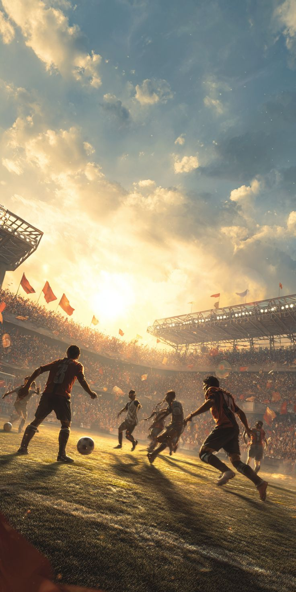
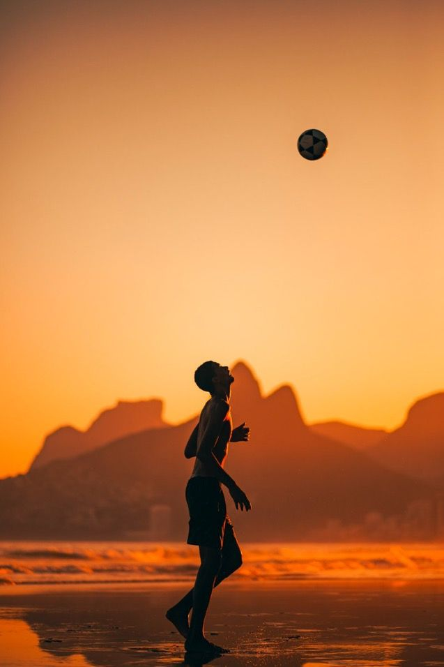
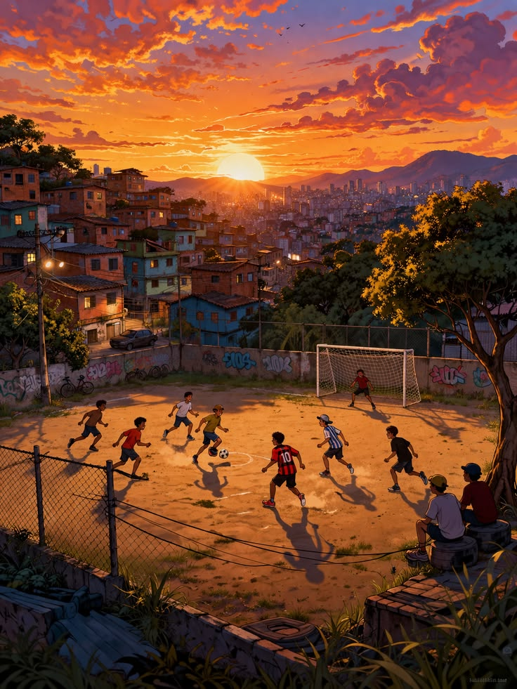

Esporte Para a Vida
Mais do que praticar. É viver o esporte.
Mais do que praticar. É viver o esporte.
É entrar em quadra, correr, tentar uma jogada, errar, tentar de novo e comemorar quando finalmente dá certo.
Descobrir esportes →Eu sempre achei interessante como cada esporte consegue despertar uma sensação diferente. Tem gente que gosta da emoção do futebol, outras pessoas preferem a velocidade do basquete ou a disputa ponto a ponto do vôlei.
E não existe uma maneira certa de gostar de esporte. Cada pessoa pode se identificar com uma modalidade diferente e encontrar nela alguma coisa que realmente goste.
Além de competir, praticar esporte também pode ser uma forma de se divertir, conhecer pessoas, superar desafios e perceber que está melhorando aos poucos.

Separei algumas modalidades que fazem parte do projeto. Escolha uma delas para conhecer um pouco da sua história, das suas regras e de algumas curiosidades.
Um esporte rápido, cheio de jogadas e que exige bastante atenção. E, para mim, uma das partes mais legais é perceber que estou conseguindo melhorar.
Explorar basquete → 02
02
Um esporte em que você precisa confiar nos seus companheiros. Cada passe, levantamento e ataque pode fazer diferença no ponto.
Explorar vôlei →
03Um dos esportes mais conhecidos do mundo. Tem competição, estratégia, habilidade e, principalmente, muita emoção.
Explorar futebol →
Na minha opinião, uma das melhores coisas do esporte é que você não precisa ser o melhor para começar. Dá para começar do seu jeito e ir aprendendo com o tempo.
Errar faz parte. Às vezes uma jogada não dá certo, o treino não sai como esperado ou você percebe que ainda tem bastante coisa para melhorar.
Mas também tem aquela sensação boa de perceber que algo que antes era difícil começou a ficar mais fácil. É justamente essa evolução que faz valer a pena continuar.
Conhecer mais →Eu escolhi fazer esse site sobre esporte porque acho interessante a forma como diferentes modalidades conseguem fazer parte da vida das pessoas.
No site, eu quis juntar algumas informações que considero importantes, como a história dos esportes, suas regras, curiosidades, grandes jogadores e competições.
Também quis colocar um pouco da minha própria experiência, principalmente porque praticar esporte não é só assistir a uma partida ou conhecer suas regras.
Para mim, também tem a parte de entrar em quadra, tentar melhorar, aprender com os erros e aproveitar os momentos com outras pessoas.
No final, a ideia do projeto é simples: apresentar alguns esportes de uma maneira fácil de entender e mostrar que qualquer pessoa pode encontrar uma modalidade que goste.
